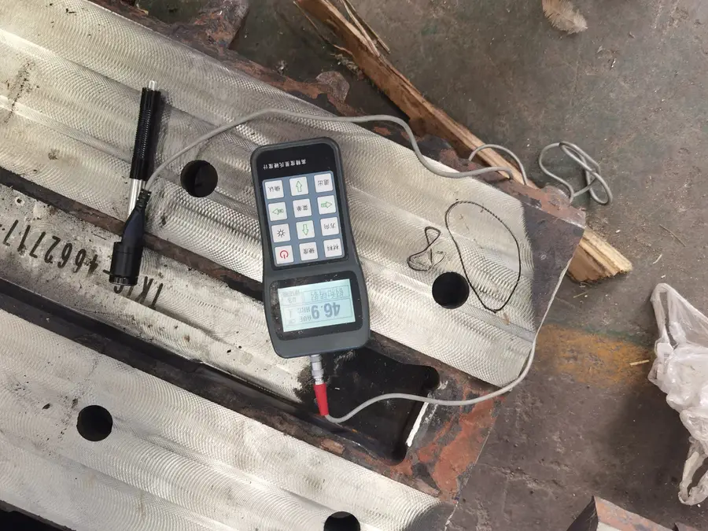
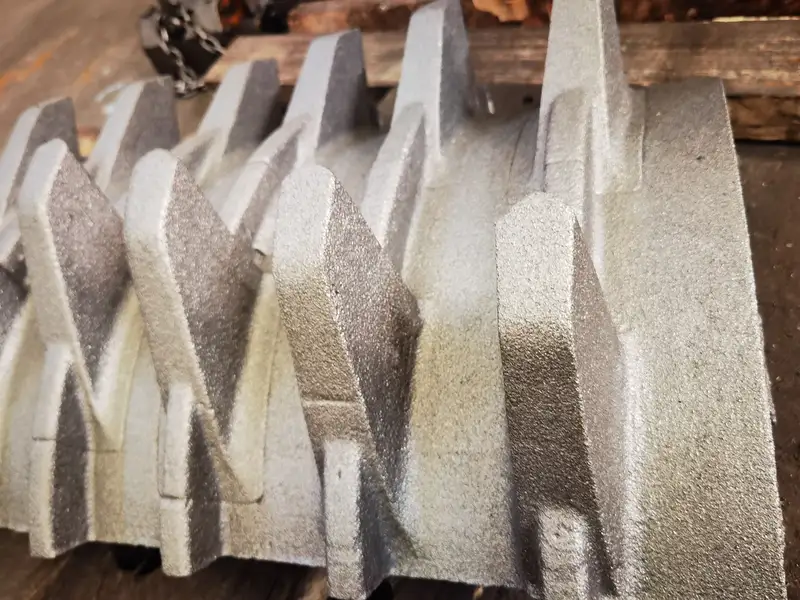
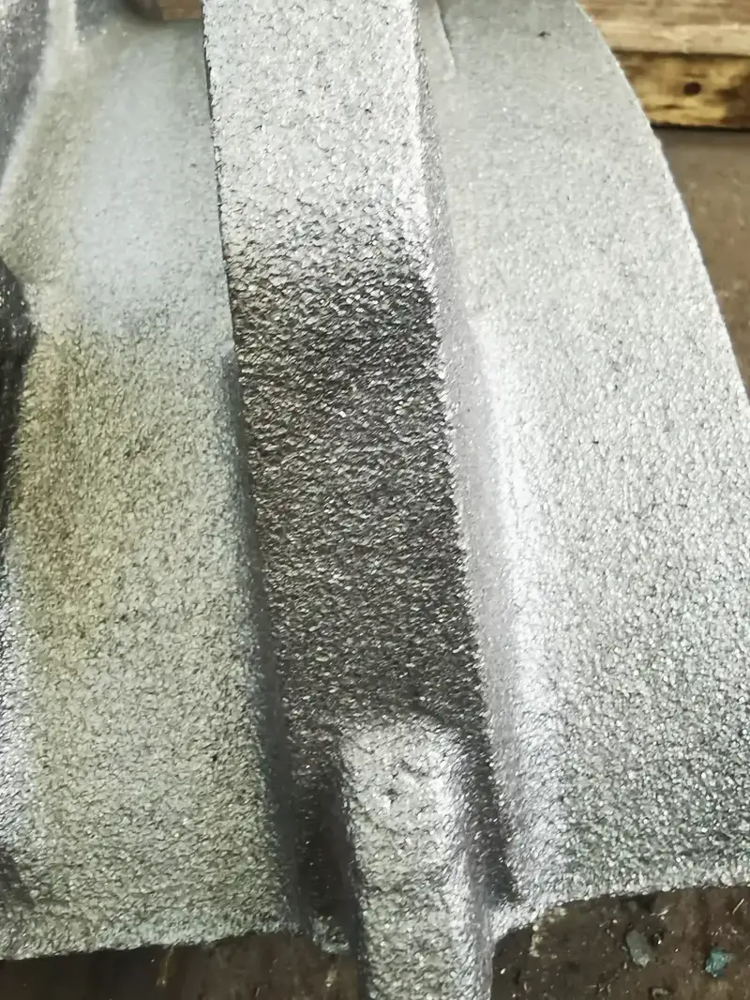
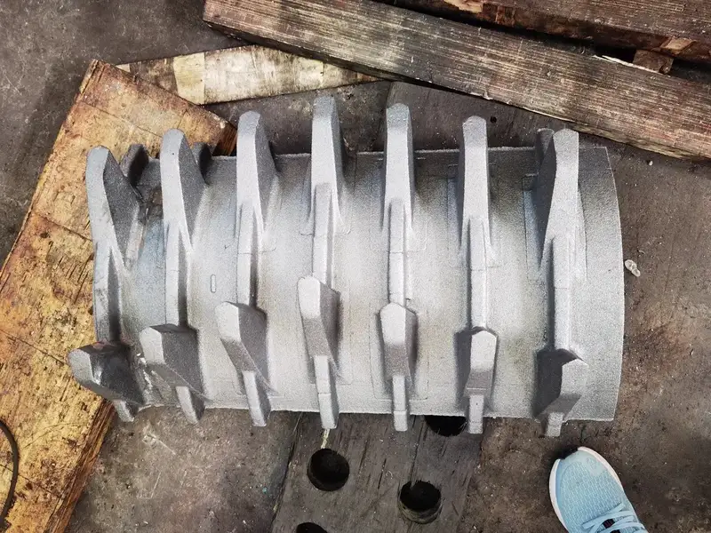
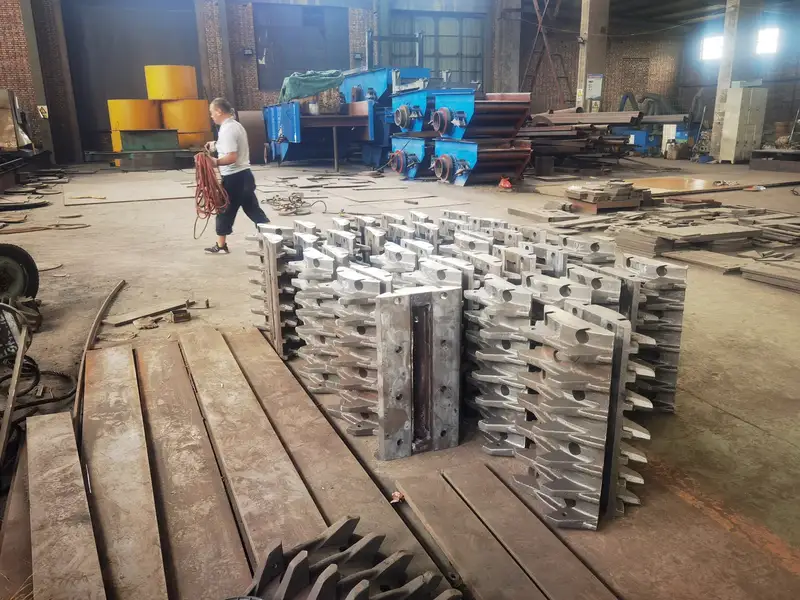

Overview
Technical Specs
Детали
ThyssenKrupp
Конусные KB
ККД ThyssenKrupp KB для первичного дробления с максимальной производительностью. Загрузка до 1 830 мм, до 14 000 т/ч. Anranst — сегменты чаши из Mn18Cr2 и Mn22Cr2Mo.
Typical Applications
Factory
Галерея производства — Цех Anranst






.webp)
Technical Data
Конусные KB — Модели
| Модели | Детали |
|---|---|
| Модели | KB 54-75 to KB 63-130 |
| Производительность | 3,000-12,000 tph |
| Макс. питание | Up to 2,000mm |
| CSS | 100-350mm |
| Мощность | 400-1,500 kW |
| Модели | DRS 1000, ZG30C |
| Марка материала | ZG30CrMnMo |
| Модели | Cylinder |
Детали
Футеровки: Mn18Cr2-Mn22Cr2, опция MMC керамика в зонах с высоким износом.
Детали
Конусные KB Детали
Модели
KB 54-75 to 63-114
Детали
Футеровки
Конус дробящий
Основной элемент дробления в конусных дробилках KB-серии
Mn18Cr2ASTM A128 Grade B-4 / GB ZGMn18Cr2
ТвёрдостьHB 230-300 (work-hardens to HRC 48-58)
ВязкостьAKV ≥ 60J
Прочность≥ 800 MPa
Текучесть≥ 420 MPa
| Grade | C | Si | Mn | Cr | Mo | Ni |
|---|---|---|---|---|---|---|
| Mn18Cr2 | 1.05-1.35 | ≤1.0 | 16.0-19.0 | 1.5-2.5 | — | — |
Более высокое содержание Mn обеспечивает глубокий наклёп; срок службы на 20-30% дольше Mn13
Mn13Cr2ASTM A128 Grade B-2 / GB ZGMn13-2
ТвёрдостьHB 210-260 (work-hardens to HRC 45-55)
ВязкостьAKV ≥ 80J
Прочность≥ 750 MPa
Текучесть≥ 380 MPa
| Grade | C | Si | Mn | Cr | Mo | Ni |
|---|---|---|---|---|---|---|
| Mn13Cr2 | 1.05-1.20 | ≤1.0 | 11.5-14.0 | 1.5-2.5 | — | — |
Отличная способность к наклёпу; поверхностная твёрдость повышается под ударной нагрузкой
Чаша / футеровка
Многосегментное неподвижное кольцо; каждый сегмент заменяется отдельно
Mn18Cr2ASTM A128 Grade B-4 / GB ZGMn18Cr2
ТвёрдостьHB 230-300 (work-hardens to HRC 48-58)
ВязкостьAKV ≥ 60J
Прочность≥ 800 MPa
Текучесть≥ 420 MPa
| Grade | C | Si | Mn | Cr | Mo | Ni |
|---|---|---|---|---|---|---|
| Mn18Cr2 | 1.05-1.35 | ≤1.0 | 16.0-19.0 | 1.5-2.5 | — | — |
Более высокое содержание Mn обеспечивает глубокий наклёп; срок службы на 20-30% дольше Mn13
Сегмент чаши
Сегменты чаши ККД KB; болтовое крепление, Mn18Cr2 или Mn22
Mn18Cr2ASTM A128 Grade B-4 / GB ZGMn18Cr2
ТвёрдостьHB 230-300 (work-hardens to HRC 48-58)
ВязкостьAKV ≥ 60J
Прочность≥ 800 MPa
Текучесть≥ 420 MPa
| Grade | C | Si | Mn | Cr |
|---|---|---|---|---|
| Mn18Cr2 | 1.05-1.35 | ≤1.0 | 16.0-19.0 | 1.5-2.5 |
Улучшенный наклёп; на 20-30% дольше Mn13 при высоком сжатии
Mn22Cr2MoPremium Hadfield / GB ZGMn22Cr2Mo
ТвёрдостьHB 250-320 (work-hardens to HRC 52-62)
ВязкостьAKV ≥ 50J
Прочность≥ 850 MPa
Текучесть≥ 450 MPa
| Grade | C | Si | Mn | Cr | Mo |
|---|---|---|---|---|---|
| Mn22Cr2Mo | 1.10-1.40 | ≤0.8 | 20.0-24.0 | 1.8-2.5 | 0.3-0.6 |
Максимальный наклёп; на 40-60% дольше Mn13 при тяжёлых нагрузках
Почему Anranst
- Тяжёлые конусы Mn18Cr2 для KB 54-67 - KB 63-114; наклёп под сжатием
- Сегментная чаша с быстроразъёмными болтами; время замены на 35% меньше
- Полное покрытие KB: 54-67 - 63-114